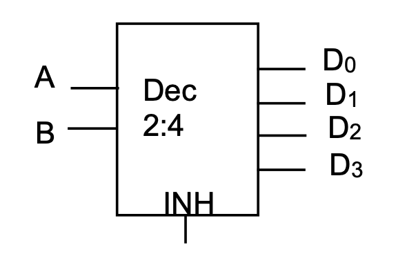
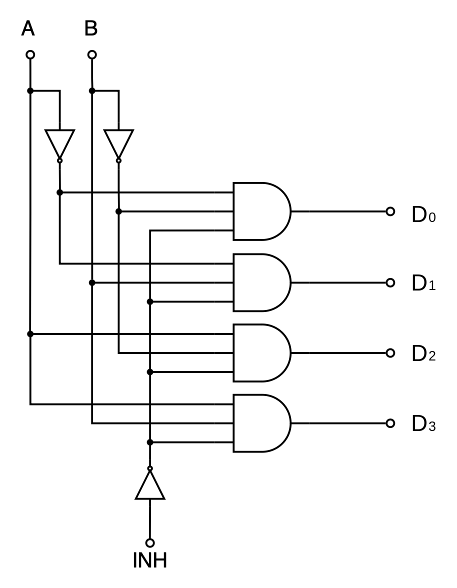
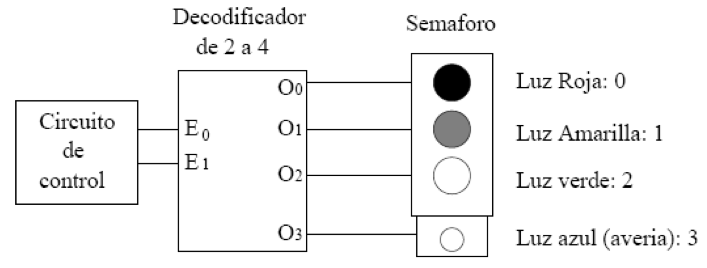
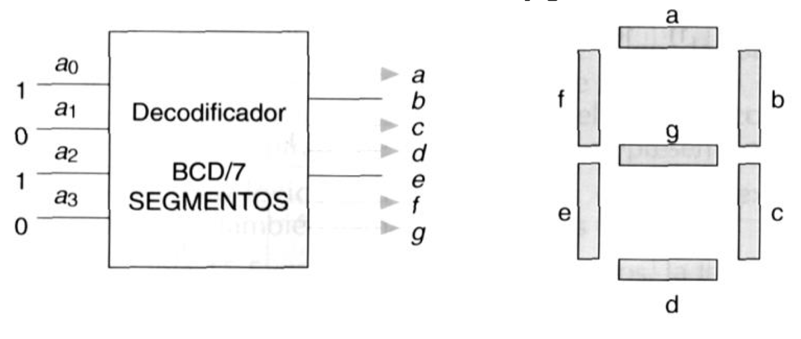
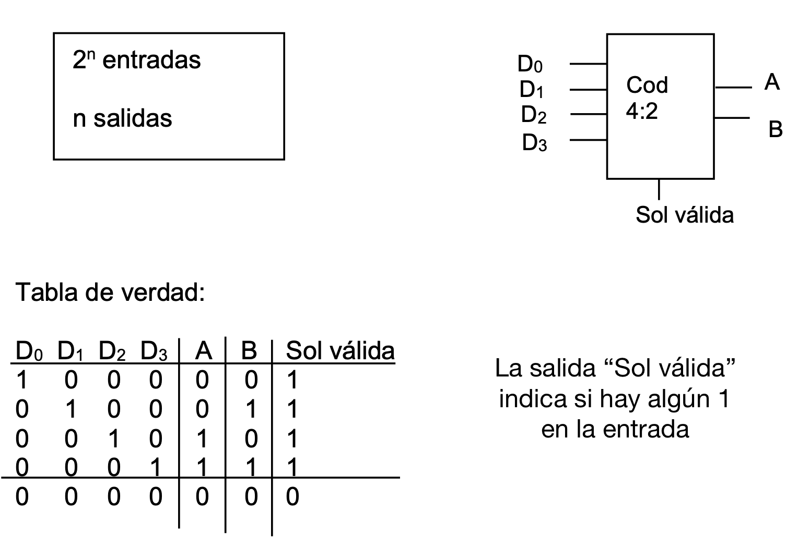
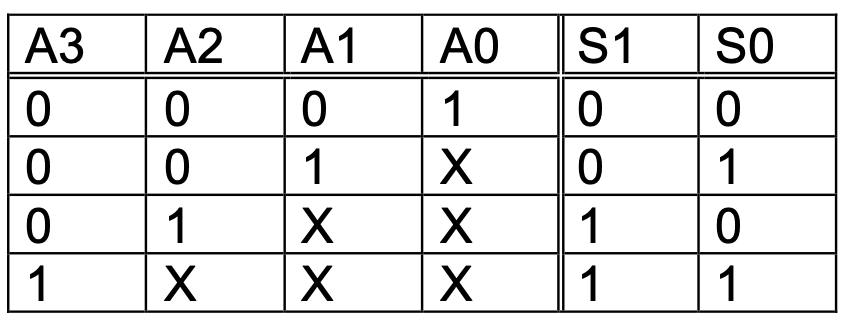
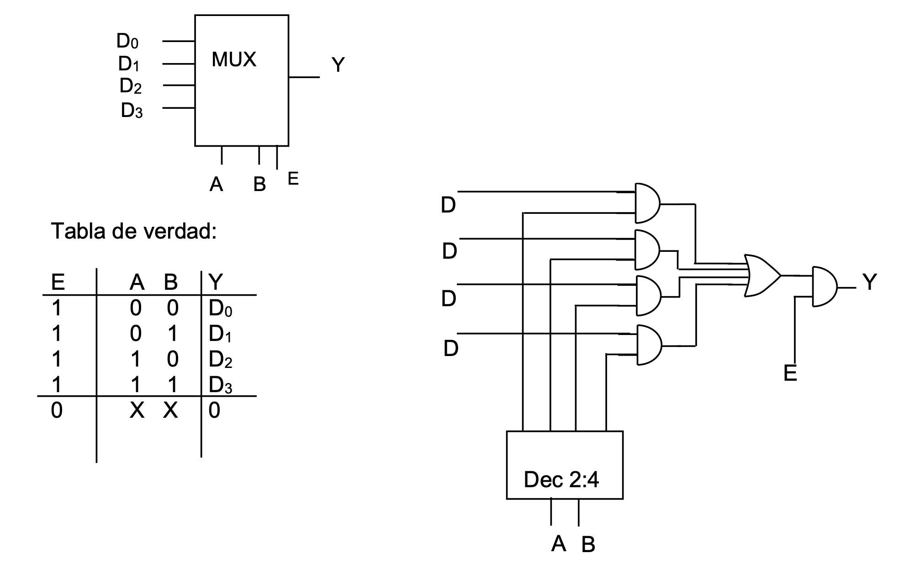
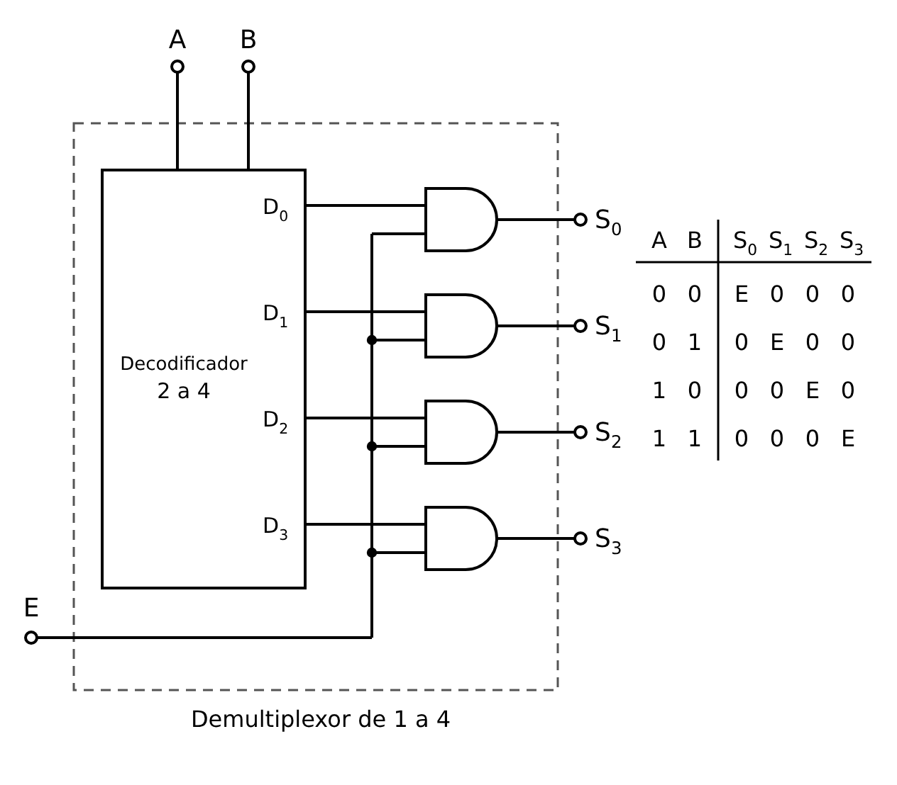
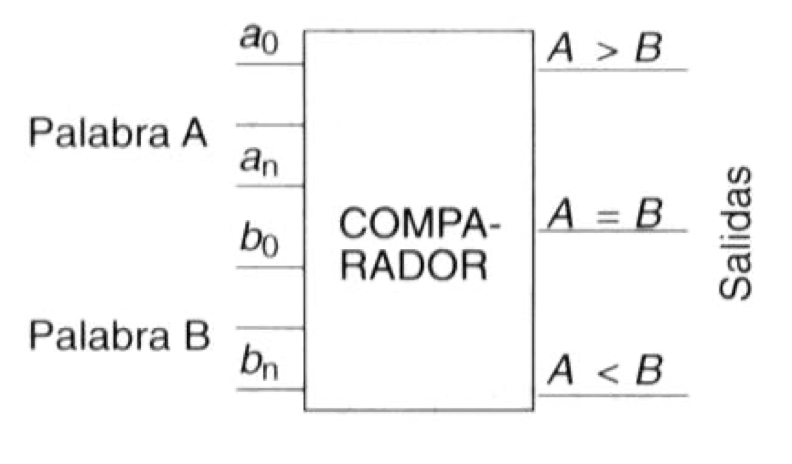

A continuación vamos a ver una serie de circuitos lógicos combinacionales que realizan cada uno de ellos una misión determinada. Veremos la función que desempeñan y la expresión lógica. Son solo algunos ejemplos seleccionados de circuitos muy usados pero, como te imaginarás, existen infinidad de circuitos para realizar diferentes tareas.
Decodificadores
Un decodificador es un circuito combinacional que tiene n entradas y 2n salidas.
Su función consiste en que, cuando se presenta una determinada combinación binaria a la entrada, se activa una de las salidas, mientras que el resto permanecen desactivadas.
Los decodificadores se utilizan en muchos tipos de aplicaciones. Por ejemplo, en los ordenadores, para seleccionar los puertos de entrada/salida a través de los que se comunica con la impresora, el módem, el escáner, etc. Se emplea un decodificador para seleccionar el puerto de entrada/salida determinado por el ordenador, de forma que los datos puedan ser enviados o recibidos desde algún dispositivo externo concreto.
También se pueden usar para representar cifras en un display de 7 segmentos, para generar y convertir códigos, etc.
Aquí puedes ver el esquema de un decodificador de 2 entradas a 4 salidas (decodificador de 2 a 4):

Las entradas A y B indican qué salida hay que activar mediante código binario natural. La señal de entrada INH (señal de inhibición) pone todas las salidas a 0, sea cual sea el valor de A y B. La tabla de verdad de este decodificador sería, por tanto:
| INH | A | B | D0 | D1 | D2 | D3 |
|---|---|---|---|---|---|---|
| 0 | 0 | 0 | 1 | 0 | 0 | 0 |
| 0 | 0 | 1 | 0 | 1 | 0 | 0 |
| 0 | 1 | 0 | 0 | 0 | 1 | 0 |
| 0 | 1 | 1 | 0 | 0 | 0 | 1 |
| 1 | X | X | 0 | 0 | 0 | 0 |
El esquema lógico de este decodificador sería el siguiente:

Ejemplo de aplicación: control de semáforo

Si utilizamos un decodificador de 2 a 4, conseguiremos controlar el semáforo asegurándonos de que solo estará activa una luz en cada momento. Además, el circuito de control que diseñemos sólo debe tener 2 salidas para el semáforo, por lo que será más simple que si tuviera que proporcionar las cuatro salidas por separado.
Si el circuito de control envía el número 2 en binario (1 0), se encenderá la luz verde (que tiene asociado el número 2) y sólo la luz verde. Esto es porque, como hemos visto, un decodificador activa sólo una de las salidas, la salida que tiene un número igual al que se ha introducido por la entrada. Si el circuito de control envía el número 3, se activa la salida O3 y se encenderá la luz azul para indicar avería (y sólo esa).
DECODIFICADORES CON ACTIVACIÓN SIMULTÁNEA DE VARIAS SALIDAS
Permiten activar varias salidas a la vez según la combinación deseada. El más típico es el decodificador BCD-7 segmentos usado en los displays de calculadoras, relojes, etc. Si las salidas se notan como a, b, c, d, e, f y g, tendremos que:

Tendrás que hacer una tarea que consistirá, precisamente, en diseñar un circuito decodificador de este estilo.
Codificadores
Un codificador es un circuito integrado que permite compactar la información generando un código de salida a partir de la información de entrada. Realiza la función inversa al decodificador.

Codificador con prioridad
En caso de producirse acciones simultáneas de varias de sus entradas, en la salida se presentará el código de aquella entrada que tenga asignada un mayor peso, normalmente la de mayor valor decimal.

Convertidores de código
Sirven para cambiar de código (de BCD natural a Aiken, de binario natural a Aiken, de BCD natural a binario natural, etc).
Multiplexores y demultiplexores
Multiplexor
Un multiplexor es un circuito integrado en el que las entradas de control seleccionan una entrada entre varias para llevar la información de esta entrada a una única salida.
Estos circuitos tienen:
- 2n entradas de señal
- n entradas de control
- 1 salida
Aquí puedes ver el diseño de un multiplexor 4:1. Puede haber una entrada de habilitación (enabled - E): si está a “1” la salida sigue igual, si está a “0”, la salida es “0”. Esto permite sacar la salida solo en un momento determinado y sincronizarla con otro circuito (indispensable para la comunicación en serie, por ejemplo).

Demultiplexor
Los demultiplexores realizan una función contraria a los anteriores, dirigiendo la información a la salida seleccionada mediante las entradas de control.

Comparadores
Son circuitos que detectan las relaciones mayor (M >), menor (m <) e igual (I =).
Presentan dos grupos de n líneas de entrada (A y B) que son la expresión en binario de los números que queremos comparar y tres señales de salida (M, I, m).

Ejercicio
Diseña un circuito comparador de palabras de 3 bits.